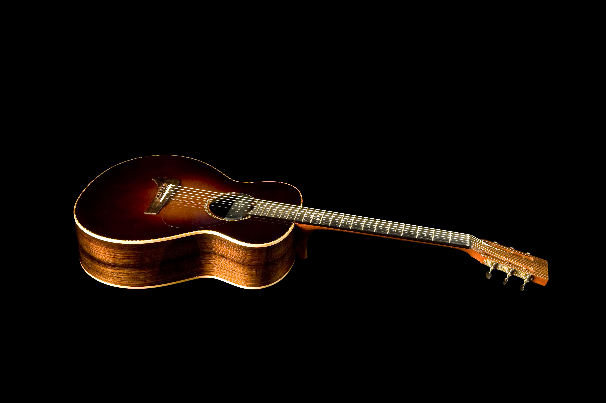
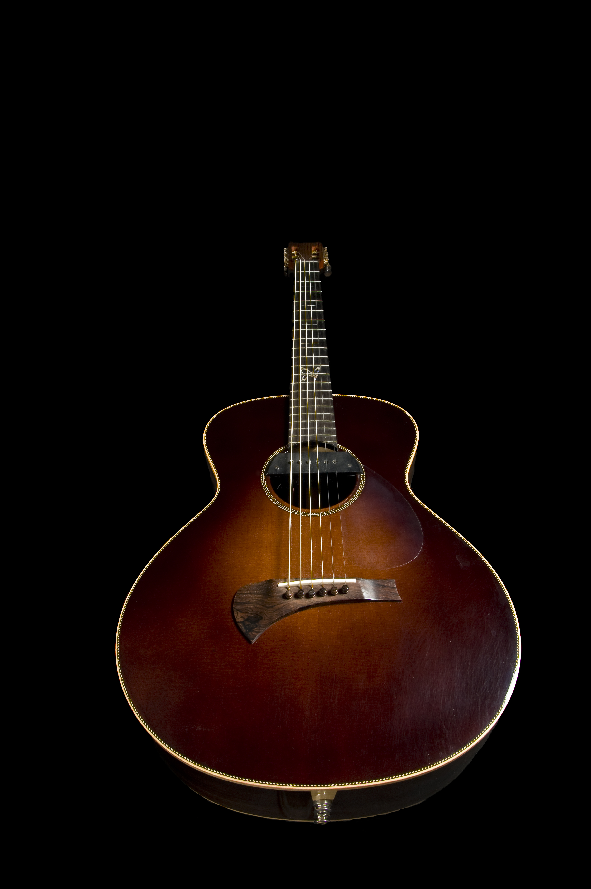
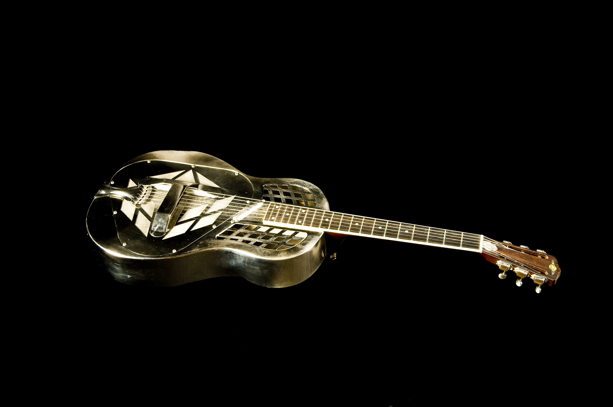
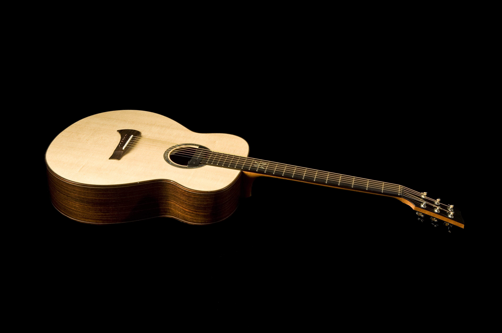
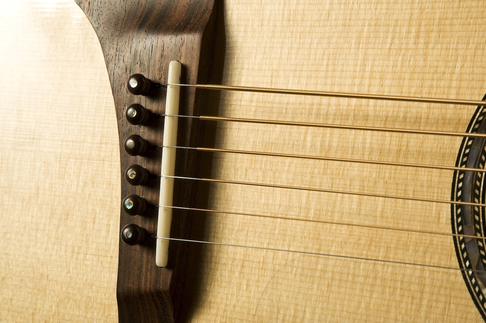
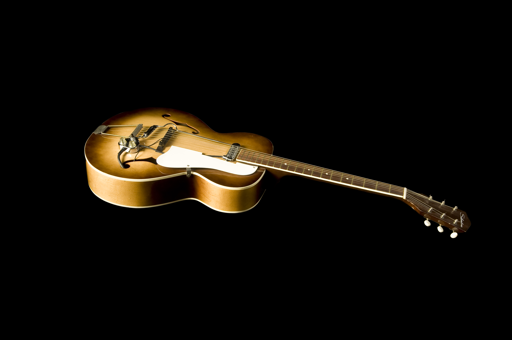
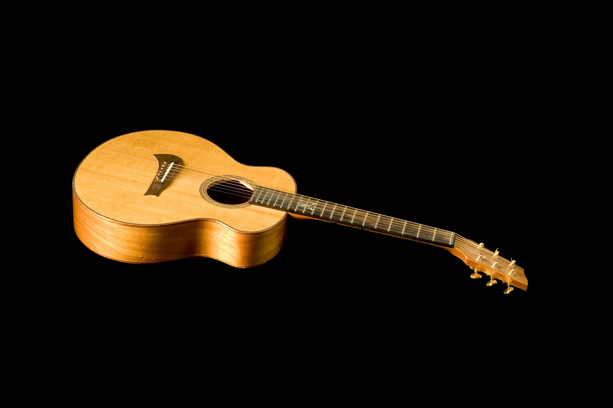
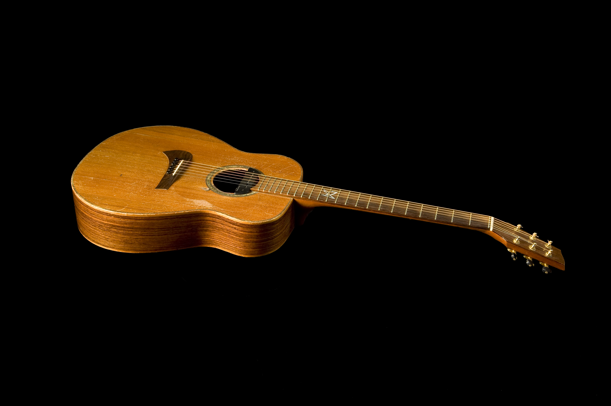
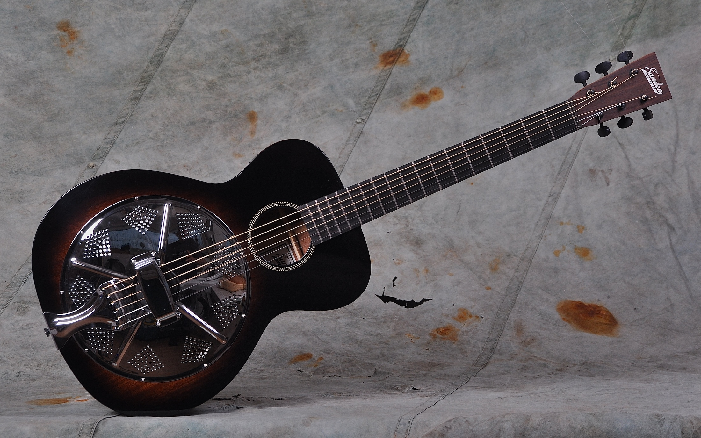

I play Sandén Acoustic Guitars exclusively — built by master luthier Michael Sandén in Sweden.
(My Continental metal guitar and Silvertone Archtop are a different sort of guitar — more on those below.)

Photo: Göran Persson
Fotografen i Helsingborg
Ever since I bought my first Sandén guitar — the road warrior below — I wanted another one built after my own specifications. There's something with us players: we want an instrument that's unique, our own, something that's calling us but we can't explain why.
I asked Michael to build me a guitar that's smaller in size but with a deeper body, and then a bit wider neck — and the rest was his decision. The wood in this guitar is spruce top, back and sides in East Indian Rosewood, maple binding, Honduras Mahogany neck (in those days still legit to use) and ebony fretboard. Mother of pearl inlays, open headstock. He recommended Waverly tuners — and that was it. My main guitar for more than 20 years.

Photo: Göran Persson
Fotografen i Helsingborg
Some instruments photograph differently depending on the light. This guitar changes character completely — warm and woody in one setting, almost architectural in another. It plays the same in any light. Beautifully.
I haven't bought a new guitar since this one arrived in 2005. It hasn't needed replacing — and it won't be.

Photo: Göran Persson
Fotografen i Helsingborg
This guitar was made by AMI GmbH in Munich, Germany — out of business now and production discontinued. The story behind it is that the company had to wait until the patent for this type of resophonic guitar expired in 1991. The patent was owned by National Guitars for many years, and this particular model is a very true replica of the first National Style 1 tricone made in 1927.
One of the differences between the original design and the Style 1 being made today by other manufacturers: the 12th fret doesn't align perfectly with the neck and body joint — it's a bit recessed, meaning you have to reach higher up to get that clean octave. This means nothing to those who don't play, but some people are willing to spend ages on internet forums discussing the best design here. Anyway, my guitar is a replica of the original from 1927 and I'm so used to playing it that I don't really care.
This guitar means a great deal to me. Its sound, the physics of holding it, and playing slide on it are very unique.

Photo: Göran Persson
Fotografen i Helsingborg
Michael Sandén and I participated in many trade shows at Frankfurt Musikmesse over the years. At one point baritone acoustic guitars started showing up at the shows and we tried them all of course. Baritone guitars have longer necks than average acoustic guitars, allowing heavier strings that can be tuned lower. I was always interested in lower tunings, so I used my old 12-string Sigma guitar with very heavy strings tuned down to B or A. While it kind of worked, it wasn't the real thing.
I guess Michael got tired of me whining about this. He asked me if I'd be willing to test a new baritone he was about to build — bigger body, improved specs. When I got it in my hands it was a revelation. Everything I could possibly dream of sound-wise was there. It suited me to the last neutron of my body and I just loved it.
Michael let me take it and start playing it live. People started asking about the guitar wherever I played, and all of a sudden Michael started getting new orders for baritone guitars. Some time later he suggested calling it the Sandén Baritone HM — my first ever signature instrument.

Usually there are wound strings between the 3rd and 6th string, which then go over the saddle. Udo Roestner from Udo-Amps designed a special string suited for baritone guitars, back in the day he was cooperating with the great Steve White — an amazing guitar player who sadly isn't with us any more.
The approach was to mimic piano strings or bass guitar strings, made after the "Contact Core" principle: the string is unwound where it rests on the saddle, and then the winding starts later on. This ensures a clearer sound on the deep basses, and I hear a clear difference between these and ordinary wound baritone strings.
Oh well, I still have a couple of sets in my gear bag — but as far as I know, there are no contact core baritone strings available for purchase anymore. If you can prove me wrong, please let me know: homesickmac@gmail.com

Photo: Göran Persson
Fotografen i Helsingborg
Bought off eBay some 20 years ago, it came quite damaged — the expander screw inside, which supports the guitar neck and body joint, was broken. The neck had raised and the guitar wasn't playable at all.
With help from a metalworker friend, we took a 20-inch long bolt through the upper f-hole and then through the expander screw opening to the outside. We secured the neck by threading a nut onto the bolt and could slowly start to tighten at Michael Sandén's workshop. He warmed up the joint between the neck and body, and we continued tightening a couple of turns at a time. In a couple of days the neck retained its right angle — tightened to place with a nut from the outside, and another nut on top.
So it's been an ugly repair — but the guitar plays heavenly. The old vintage DeArmond magnetic pickup from the 50s makes it an incredible slide guitar, and I can also get that smooth jazzy tone when I need to.

Photo: Göran Persson
Fotografen i Helsingborg
This guitar never made it to production at Sandén Guitars. Michael made it for himself — small and handy, with wonderful sound, and a very practical travel guitar. He could disassemble it by loosening the strings and unscrewing two allen screws inside the body. This was before travel guitars were "the thing."
I was gifted this guitar by Michael after one of the Frankfurt Musikmesse trade shows, after I'd been playing it for the entire trip in the back seat of a fully loaded car. I guess he didn't want to hear a single note played on that guitar ever again.
I love it and use it live on special occasions when I need a high tuned pitch in the sound — like when I'm playing a song in A but want to use an open D style tuning, only tuning it to AEAC#EA. Due to the very short scale length, I can use a light set (0.12–0.54) and tune it up. It opens up harmonic possibilities a standard-sized guitar simply can't deliver.

Photo: Göran Persson
Fotografen i Helsingborg
Michael Sandén built this guitar for himself — to play solid backup in his Irish folk band, wanting those smooth midrange frequencies that cut through the crowd. I started hanging around his workshop a lot in those days, drooling over his beautiful guitars and telling him I couldn't really afford to buy one — but that I'd love to, at some point.
Then one day he offered me to buy "his own guitar," as he put it — a solution for the time being, and he didn't charge the full price. Off it moved, the little Redwood top guitar. The specs are quite special: 16 frets to the body (usually 12 or 14 on acoustics), redwood top for a very snappy response, East Indian Rosewood back and sides, Honduras Mahogany neck, ebony fretboard.
This guitar almost drilled itself into my hands. I couldn't put it down. It was the best guitar I'd ever played — which is highly personal of course, but we just melted together. I've played it on many, many shows, it travelled well and served both small and big crowds.
The reason I don't play it anymore is that the guitar moved to London recently. My daughter is also a musician, and after borrowing it on many occasions and flying back and forth with it — oh well, she got to keep it. The old road warrior is in good hands.

Photo: Michael Sandén
Michael used to build smaller acoustic guitars made out of mahogany — the "Roots Series." More affordable than his custom models, they became very popular. The R14 was acoustic. But then Michael got this idea of making a resophonic wooden guitar that would still have a sound hole. This was new — resophonic guitars usually have a one-piece top with f-holes, like violins or cellos. Nope, Michael wanted both: the resonator and the sound hole.
The result is a beautifully sounding guitar and a true slide beast. In any loud jamming situation it cuts through with a punch that cannot be compared to anything else. A very unique guitar — and if you get any ideas of ordering one, sorry folks. Michael discontinued this model and isn't taking any new custom orders. He still builds, but only models he feels like making, listed on his website as they become available.
A slide is a tube — glass, metal, or in the early days of blues, a real bottleneck cut from a wine bottle. I wear mine on the pinky of my fretting hand and glide it over the strings. Every slide I use has a name.
Handblown glass slides made in the UK. Ian McWee, a close friend of many years now, hires the best artist glass blowers in the area to make slides to custom sizes, which is very rare. We're talking the thickness, wall diameter, length… Amazing work with each slide made to your specifications. Check out the model I'm using on their website!
Metal slides from a small "father and son" family business in Germany. Ian Simon (the son) first approached me at Frankfurt Musikmesse with an early version, this was years ago. We talked, we continued talking — and I now have the best metal slide I've ever played. Check out my favorite model at their website.
If you have a question about any of the instruments, slides or accessories — get in touch. I'm happy to talk gear.
Get in Touch